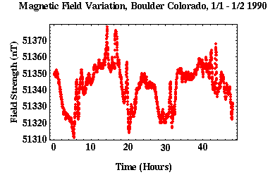

Strategies for Dealing with Temporal Variations
Like our gravity observations, magnetic readings taken at the same location at different times will not yield the same results. There are temporal variations in both the Earth's magnetic and gravitational fields.
In acquiring gravity observations ,we accounted for this temporal variability by periodically reoccupying a base station and using the variations in this reading to account for instrument drift and temporal variations of the field. We could use the same strategy in acquiring magnetic observations but is not routinely done for the following reasons:-
Field variations can be more erratic -
Unlike the gravitational field, the magnetic field can vary quite erratically with time, as shown in
the figures below.
What this means is that to adequately approximate the temporal variation in the magnetic field by
linearly interpolating
between base station reoccupations,
a very short reoccupation time interval may be required.
The shorter the reoccupation interval, the more time is spent at the base station and the longer
the survey will take to complete.
 - Cheap Instruments - Unlike gravimeters that can cost more than $25,000, magnetometers are relatively cheap (~$7,500).
- Instrument Drift - Unlike gravimeters, magnetometers show no appreciable instrument drift.
With these points in mind, most investigators conduct magnetic surveys using two magnetometers. One is used to monitor temporal variations of the magnetic field continuously at a chosen base station , and the other is used to collect observations related to the survey proper.
By recording the times at which each magnetic station readings are made and subtracting the magnetic field strength at the base station recorded at that same time, temporal variations in the magnetic field can be eliminated. The resulting field then represents relative values of the variation in total field strength with respect to the magnetic base station.